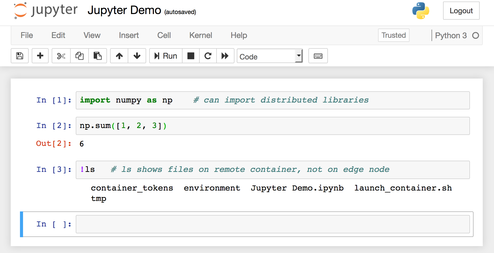

Jupyter Notebook Server¶
The skein.recipes.jupyter_notebook module provides a command-line recipe
for starting a Jupyter notebook server on a YARN container. The intended use is
to execute the module in a service, using the command:
$ python -m skein.recipes.jupyter_notebook
The executing Python environment must contain the following dependencies to work properly:
skeinnotebook
After launching the service, the notebook server connection information will be
stored in the key-value store under the key
'jupyter.notebook.info'. This key name is configurable with the
command-line flag --notebook-info-key.
Note
This recipe is not production ready, and is mostly provided for educational reasons. Port forwarding the running notebook server off a container may be forbidden by your cluster admins, and in general is not a nice workflow. For a better way of running Jupyter on a YARN cluster see Jupyter Enterprise Gateway.
Example¶
Here we provide a complete walkthrough of launching and connecting to a Jupyter notebook server. This example assumes you’re logged into and running on an edge node.
Kinit (optional)¶
See Kinit (optional).
Start the Skein Driver (optional)¶
Package the Python Environment¶
To distribute Python environments we’ll make use of conda-pack, a tool for packaging and distributing conda environments. As mentioned above, we need to make sure we have the following packages installed in the remote environment:
skeinnotebook
we’ll also install numpy to have an example library for doing some
computation.
# Create a new demo environment (output trimmed for brevity)
$ conda create -n jupyter-demo
...
# Activate the environment
$ conda activate jupyter-demo
# Install the needed packages (output trimmed for brevity)
$ conda install conda-pack skein notebook numpy -c conda-forge
...
# Package the environment into environment.tar
$ conda pack -o environment.tar
Collecting packages...
Packing environment at '/home/jcrist/miniconda/envs/jupyter-demo' to 'environment.tar'
[########################################] | 100% Completed | 16.1s
Fix the Packaged Kernelspec¶
When conda-pack packages an environment, it trys to fix as many absolute
paths found in the environment to be as relocatable as possible. Those that
can’t be fixed before packaging can be fixed after unarchiving using the
conda-unpack command. However, this mutates the files in place, which is not
allowed on YARN (the application cache directory is read-only).
To get around this, for now we need to manually patch the packaged kernelspec file to remove the absolute path.
# The patched kernel.json file
$ cat kernel.json
{
"display_name": "Python 3",
"language": "python",
"argv": [
"python",
"-m",
"ipykernel_launcher",
"-f",
"{connection_file}"
]
}
# Append the patch to the environment.tar file
$ tar --append \
--file=environment.tar \
--transform 's,^,share/jupyter/kernels/python3/,S' \
kernel.json
# gzip the environment.tar file
$ gzip -c6 environment.tar > environment.tar.gz
Write the Application Specification¶
Next we need to write the application specification. For more information see the specification docs.
# stored in jupyter-demo.yaml
name: jupyter-demo
services:
jupyter:
resources:
memory: 1 GiB
vcores: 1
files:
# Distribute the bundled environment as part of the application.
# This will be automatically extracted by YARN to the directory
# ``environment`` during resource localization.
environment: environment.tar.gz
script: |
# Activate our environment
source environment/bin/activate
# Start the jupyter notebook server
python -m skein.recipes.jupyter_notebook
Start the Jupyter Notebook Server¶
Now we have everything needed to start the Jupyter notebook server. The
following bash command starts the application and stores the application id in
the environment variable APPID.
$ APPID=`skein application submit jupyter-demo.yaml`
Retrieve the Notebook Server Information¶
To connect to a notebook server we need the address. If not specified
explicitly in the startup command, this address (and other connection info)
will be stored in the key 'jupyter.notebook.info'. We can retrieve this
information and store it in a file using the following bash command:
$ skein kv get $APPID --key jupyter.notebook.info --wait > notebook.json
$ cat notebook.json
{"protocol": "http", "host": "worker.example.com", "port": 8888, "base_url": "/", "token": "fafa55f112e6ca7a73717933c3d4a03859df799f48f54c92"}
Connect to the Notebook Server¶
Since the notebook server is running on a container, you’ll (probably) need to
use an SSH tunnel to access the server. This can be done by ssh-ing into the
edge node again, and forwarding the host and port from the notebook.json
information above out.
# Start an SSH tunnel to forward out the host:port of the notebook server,
# as found above
$ ssh jcrist@edge.example.com -L 8888:worker.example.com:8888
At this point you can login to the notebook server at localhost:8888 on
your browser. On first login you’ll need to provide the security token
(also in the notebook.json information above).
Once logged in, you can create new notebooks and interact with Jupyter as you normally would. All notebooks run inside the remote container, and have access to the distributed Python environment.
Shutdown the Application¶
Once you’re done, you can shutdown the application in one of two ways.
Hit the
Quitbutton on the Jupyter Web UI atlocalhost:8888/tree. This will shutdown the notebook server, causing the container to exit.Manually shutdown the application using the Skein CLI
$ skein application shutdown $APPID
Confirm that the Application Completed¶
We can check that application shutdown properly using skein application status
$ skein application status $APPID
APPLICATION_ID NAME STATE STATUS CONTAINERS VCORES MEMORY RUNTIME
application_1533143063639_0021 jupyter-demo FINISHED SUCCEEDED 0 0 0 10m

{kind=link}